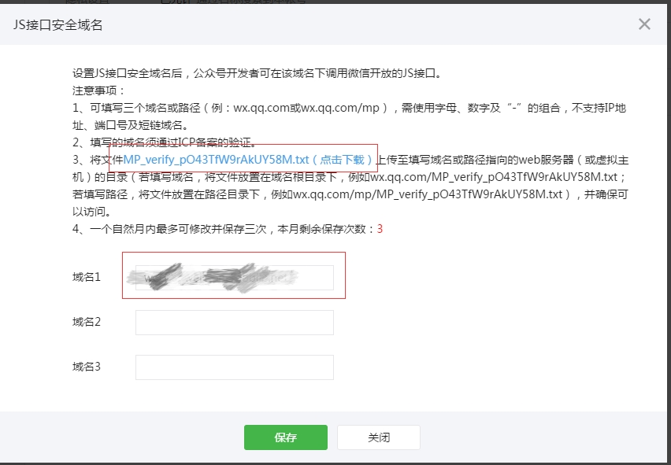
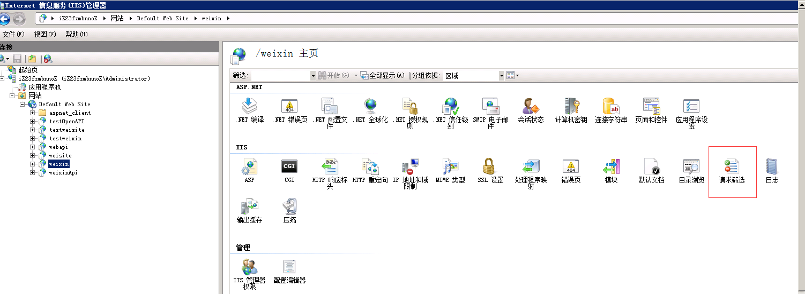
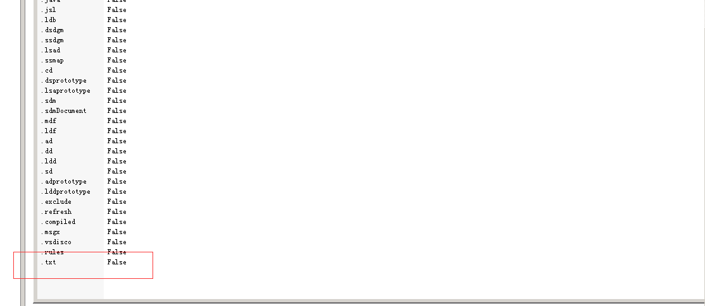

问题描述
在做微信公众号开发的时候前端使用微信JSSDK的时候需要在微信公众号官方平台去配置一个js接口安全域名，
以前直接填写保存即可，但是现在需要下载一个.txt的验证文件并放到服务器上相应的根目录下。

已确认在服务器上相应的根目录下面放了这个TXT文件，但是还是一直保存不成功。
解决方案
后面就一直排查问题，发现服务器上面已经拦截掉了.txt文件的访问。
具体是原因是在服务器上部署项目的时候，为了防止从浏览器中直接访问LOG日志而在IIS中设置了请求过滤。


解决方法就是先把这个限制删除掉，等js接口安全域名绑定成功以后再添加，为了保证安全请一定要在部署的时候把设置好请求过滤。